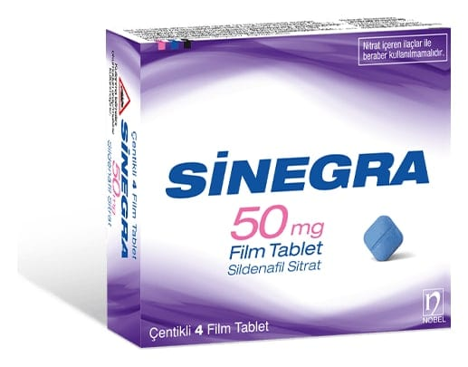

Sinegra 50 mg 4 Film Tablet

Ne için kullanılır
KT · Bölüm 1 SİNEGRA film kaplı tabletler, 50 mg sildenafil’e eşdeğer 70,24 mg sildenafil sitrat içeren, mavi renkli, kare şeklinde, her iki yüzü tek çentikli tablet olarak 4 film tablet içeren ambalajlar halinde sunulmaktadır. SİNEGRA fosfodiesteraz tip 5 (PDE5) inhibitörleri adı verilen bir ilaç grubuna dahildir. Penisteki kan damarlarının gevşemesine yardımcı olarak cinsel uyarı sırasında kanın penise akım ını sağlamak suretiyle etki gösterir. SİNEGRA sadece cinsel yoldan uyarılmanız durumunda doğal yolla sertleşme (ereksiyon) oluşmasına yardım eder. Sertleşme sorununuz yoksa SİNEGRA kullanmamalısınız. Sertleşme sorunu, bir erkekte cinsel aktivite için gerekli, penis sertleşmesinin sağlanamaması veya sertliğin korunamamasıdır. SİNEGRA kadınların kullanımı için değildir.